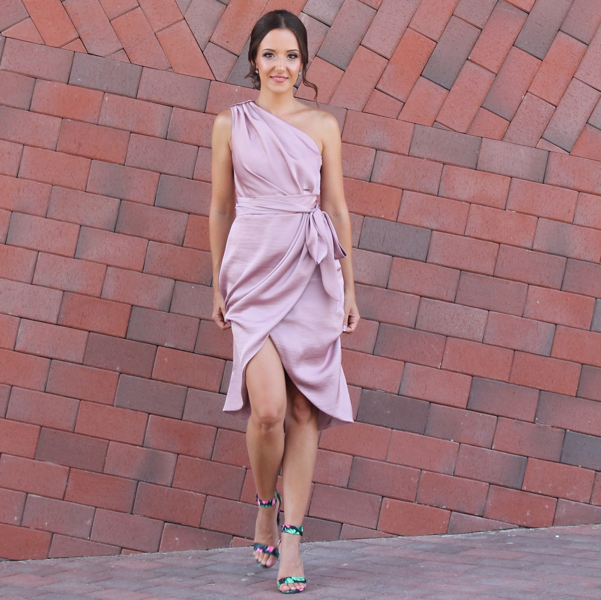
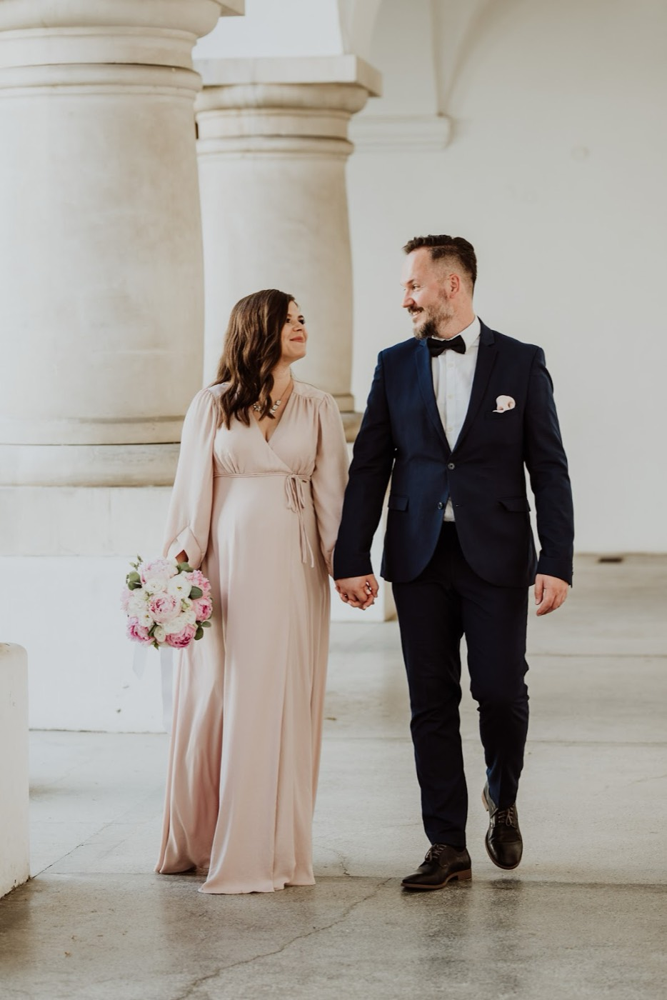
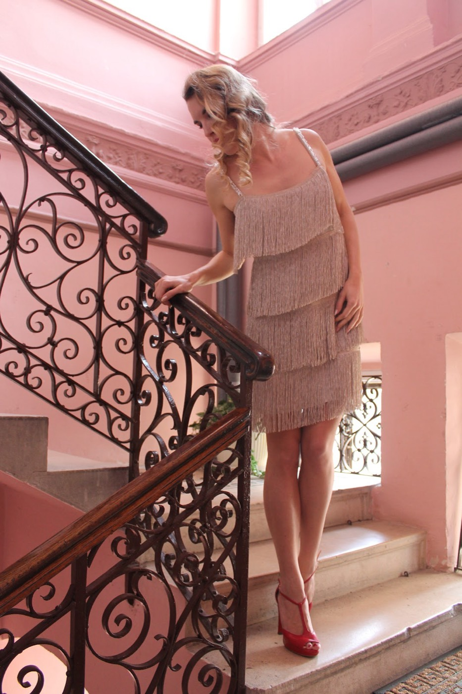
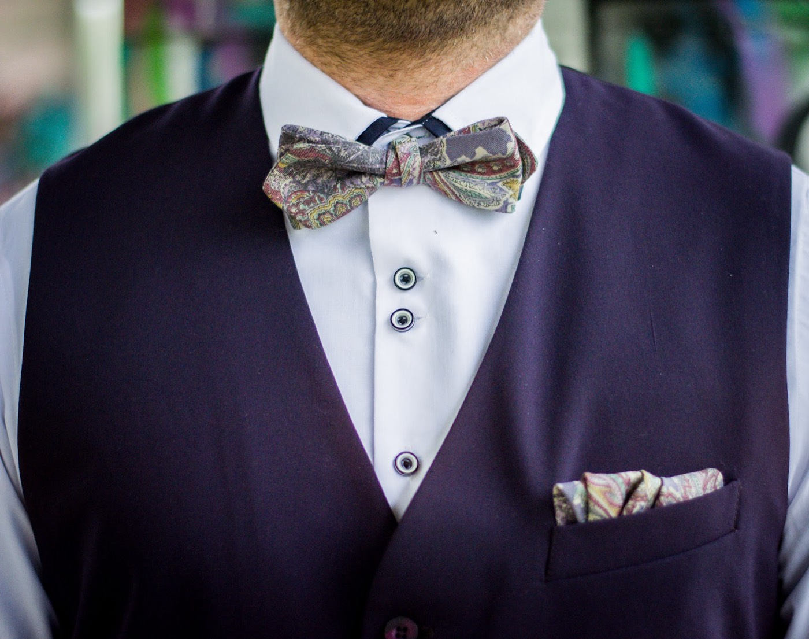
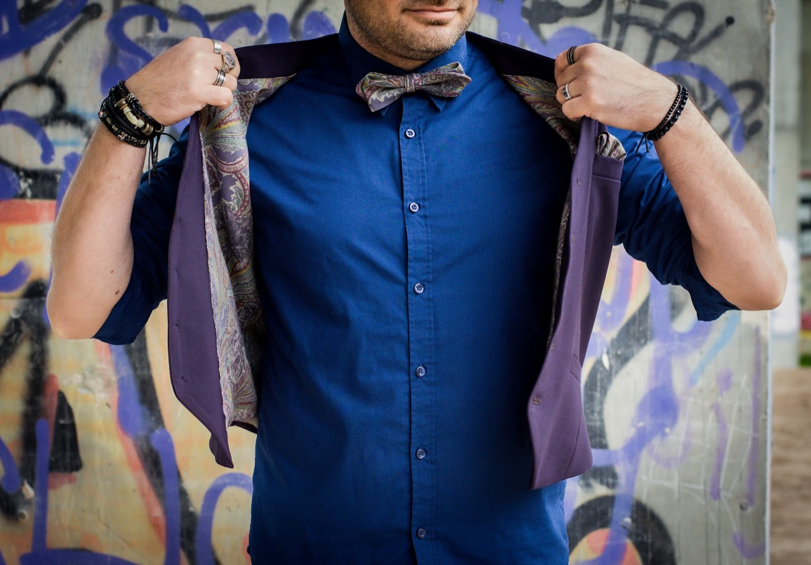

Krojački salon · Zrmanjska 11, Osijek
Haljina kojapristaje baš vama.
Šivanje po mjeri, svečane haljine i prepravci odjeće. U salonu Elegans prvo se razgovara, uzimaju se mjere i prolazi proba, sve dok komad ne bude onakav kakav ste zamislili.
Pon, sri, pet 7–15 h · uto, čet 13–20 h · sub 9–13 h


Proba u salonuZrmanjska 11, uz besplatno parkiranje
Od prve mjere do zadnjeg šava
Salon šije nove komade i prilagođava one koje već imate. Detalje i primjere radova pogledajte na stranici usluga.
Tri koraka do komada po vašoj mjeri
Razgovor
Nazovite i dogovorite dolazak. U salonu opišete što trebate: novi komad, model s fotografije ili prepravak.
Mjere i proba
Uzimaju se mjere, dogovaraju materijal i rok. Kod šivanja po mjeri slijedi proba na kojoj se sve fino prilagodi.
Preuzimanje
Kad je komad gotov, preuzimate ga u Zrmanjskoj 11, spreman za nošenje.

Krojački obrt u Zrmanjskoj ulici
Elegans je krojački obrt koji vodi Brankica Špringman. Salon je u mirnom dijelu Osijeka, u Zrmanjskoj 11, s parkingom odmah uz ulaz.
Ovdje se šiju haljine za vjenčanja i svečane prilike, a jednako se pažljivo rade i prepravci odjeće koju već imate. Na fotografijama na ovoj stranici su radovi koje je salon sam objavio.
Iz salona Elegans
Izbor fotografija koje je salon objavio na svom Google profilu.





Prije prvog dolaska
Trebam li unaprijed dogovoriti dolazak?
Za šivanje po mjeri i veće prepravke najbolje je nazvati 091 932 4668 i dogovoriti termin, kako bi bilo vremena za razgovor i uzimanje mjera.
Radite li i poslijepodne?
Da. Utorkom i četvrtkom salon radi od 13 do 20 h, ponedjeljkom, srijedom i petkom od 7 do 15 h, a subotom od 9 do 13 h.
Ima li parkinga?
Da, uz salon je besplatno parkiranje, na parkiralištu i na ulici. Parkiralište je pristupačno osobama u invalidskim kolicima.
Što ponijeti na probu haljine?
Ponesite obuću i donje rublje koje ćete nositi uz haljinu, jer o njima ovisi duljina i pristajanje.
Koliko traje izrada?
Ovisi o modelu i o tome koliko je posla u salonu. Rok se dogovara pri prvom dolasku, pa javite na vrijeme ako se spremate za određeni datum.
Dogovorite termin
- 091 932 4668
najbrži način za dogovor - Zrmanjska 11, 31000 Osijek
- Besplatno parkiranje uz salon
| Ponedjeljak | 7:00–15:00 |
| Utorak | 13:00–20:00 |
| Srijeda | 7:00–15:00 |
| Četvrtak | 13:00–20:00 |
| Petak | 7:00–15:00 |
| Subota | 9:00–13:00 |
| Nedjelja | zatvoreno |